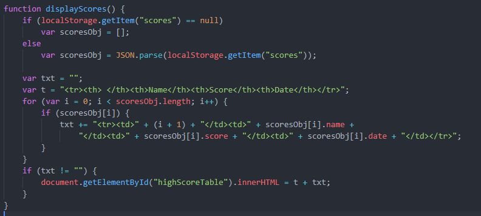

| Local Storage |
|---|
localStorage
- localStorage.setItem("key", value)
- You can set localStorage keys of: properties, objects, etc.
- The example below stores an array of highscores in the "scores" key.
- The example below stores all of the user's set game modifiers, so they don't have to change them each time they start a game.
- localStorage.getItem("key")
- localStorage.getItem("scores")
- GetItem returns the value(s) corresponding to the property given.
- localStorage.removeItem("key")
- localStorage.remove("scores")
- This would erase all of the high scores!
|
| Local Storage Example |
|---|
|  |
|